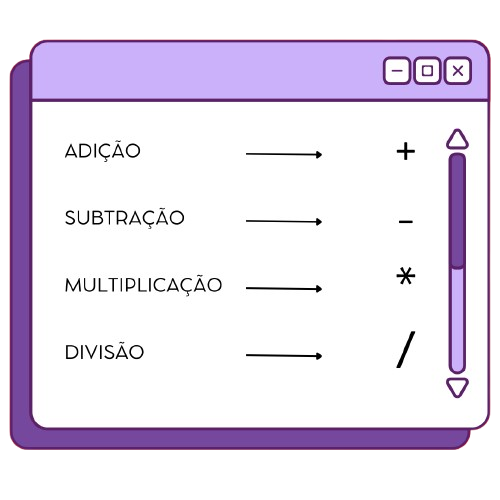
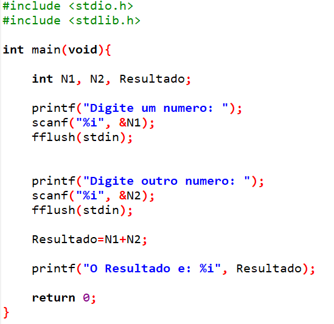

Para começarmos a fazer nossas equações temos que ter em mente os símbolos representados pelas nossas funções básicas, são eles:
Para iniciar começamos com as tags básicas. Para nosso fim, vamos usar de exemplo uma conta de soma.
Em " int " adicionamos 3 variáveis: Numero1, Numero2 e o Resultado.
Escreva os códigos de entrada de dados (printf).
Escreva a fórmula da conta baseando-se nas variáveis criadas.
Imprima o resultado.
Ao final deve se parecer da seguinte forma:
